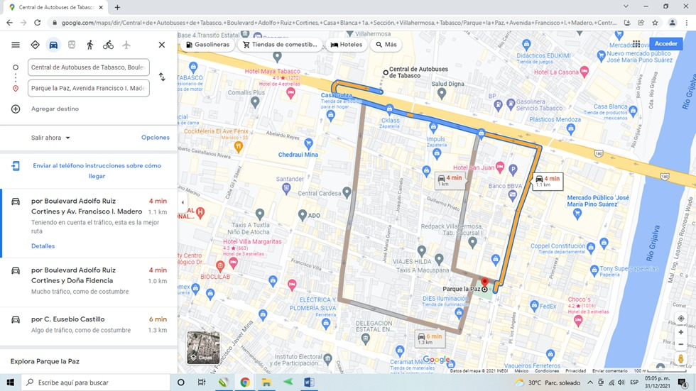
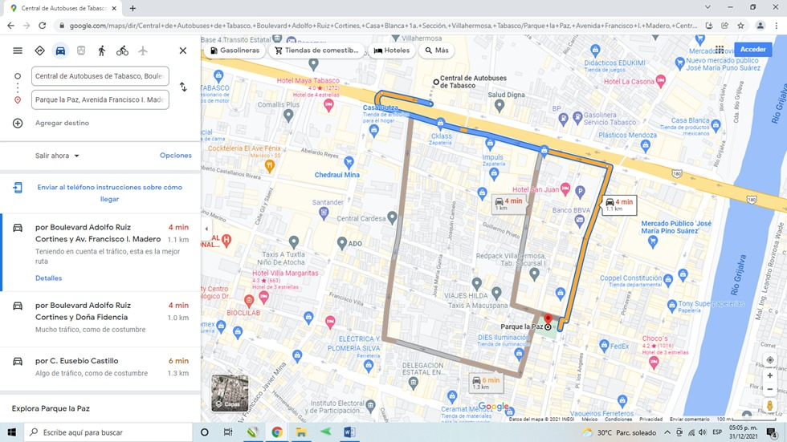

Sobre esta plaza
Se hablaba en 1639, de un pueblo de sesenta personas, posiblemente un rancho de pescadores que radicaban en lo que fue el barrio de la Santa Cruz, una población indígena que se congregaba en tomo a una gran cruz que dejó Cortés a su paso para las Hibueras.
En 1794 se habla ya de la plazoleta de «La Santa Cruz», un lugar descampado que, para celebrar el Centenario de la Independencia, se construyó el parque de «La Paz» en honor de don Porfirio Díaz por considerársele «el héroe de la Paz».
La primera piedra del actual parque se colocó el 1 de enero de 1909 por el entonces gobernador del estado Abraham Bandala de acuerdo a una placa conmemorativa que tenía y en el primer peldaño de la escalinata que conducía a la parte superior del plano alto del centro aparecía la inscripción “1910”. Lo que hacía pensar que el parque fue dedicado al general Porfirio Díaz, conocido también como el héroe de la Paz.
La obra se terminó en el año que se conmemoró el primer centenario de la independencia nacional. Posteriormente se le dio el nombre a «Ignacio Gutiérrez Gómez» en honor de este caudillo de la revolución en Tabasco, muerto en el primer combate que los revolucionarios libraron con el gobierno.
Se le consideraba un parque solo, sin historia.


 
